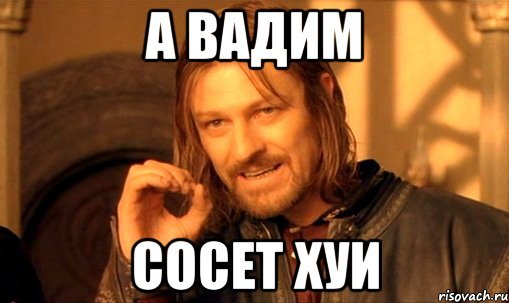
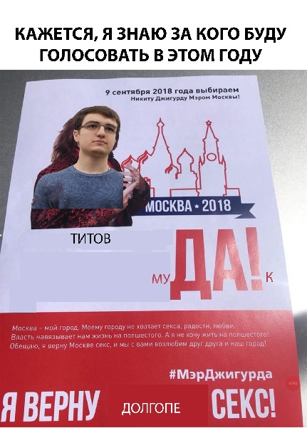

Студенты ФУПМа!
Я, Вадим Николаевич Титов, студент 2-го
курса ФУПМ, выдвигаю свою кандидатуру на
пост профорга лучшего факультета Физтеха.
Я никогда не занимался общественной
деятельностью, но с сегодняшнего дня всё
изменилось. Я осознал, что рожден для чего-
то большего, чем просто учиться. Я уверен в
том, что как никто другой понимаю
проблемы студентов нашего факультета:
Фупмы хотят иметь большие стипендии,
возможность круглосуточно ботать и
хорошие, актуальные кафедры.
Активисты процветали — но материальной
помощи становилось всё меньше, а
бесплатное питание и путевку в профилак
нельзя было получить без наличия связей.
Пора положить этому конец!
После того, как я стану профоргом, тебя
больше никогда не будут игнорировать.
Твой голос определит нашу физтеховскую
судьбу. Поэтому приходи на выборы и
измени факультет в лучшую сторону!
Почта: titow2408@gmail.com
Телефон: +7-999-975-25-17

$POWERED_BY$